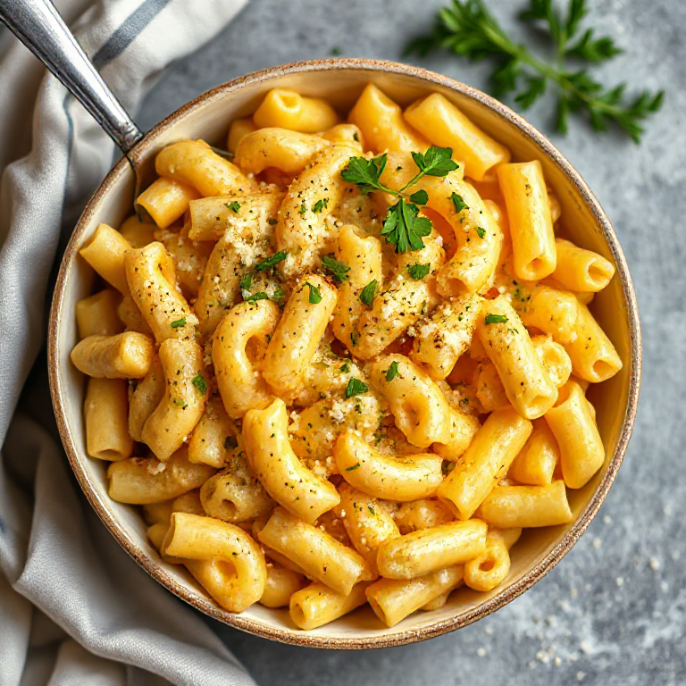

This photo was generated with FLUX.1-schnell locally using DiffusionBee
Ingredients:
For the Cheese Sauce:
3 tbsp (42g) unsalted butter
1/4 cup (30g) all-purpose flour
3 cups (720ml) whole milk, heated until warm but not boiling
1 tsp kosher salt
1/2 tsp black pepper, freshly ground
1/4 tsp garlic powder
1/4 tsp onion powder
1/4 tsp dry mustard
1 lb (450g) elbow macaroni pasta
8 oz (225g) sharp cheddar cheese, shredded
4 oz (113g) gruyère cheese, shredded
For the Topping:
1 cup (90g) panko breadcrumbs
1/4 cup (28g) grated Parmesan cheese
2 tbsp (14g) unsalted butter, melted
Salt and freshly ground black pepper, to taste
Instructions:
For the Cheese Sauce:
In a large saucepan or Dutch oven, melt the butter over medium heat until it's bubbling but not browned.
Whisk in the flour to create a roux, cooking for about 1-2 minutes until the mixture turns golden and smells slightly nutty.
Gradually whisk in the warm milk, stirring constantly to prevent lumps from forming. Cook the mixture for about 5-7 minutes, or until it thickens enough to coat the back of a spoon.
Stir in the salt, black pepper, garlic powder, onion powder, and dry mustard. Remove the saucepan from the heat.
For the Pasta:
Preheat your oven to 375°F (190°C) and position an oven rack in the middle.
Bring a large pot of salted water to a boil over high heat. Once boiling, add the elbow macaroni and cook according to package instructions until al dente (about 8-10 minutes). Drain the pasta well and return it to the pot.
Combining the Cheese Sauce and Pasta:
Add the shredded cheddar cheese and gruyère cheese to the cheese sauce, stirring until melted and smooth.
Pour the cheese sauce over the cooked macaroni in the pot, stirring gently to combine until all pasta pieces are well coated.
Transfer the macaroni and cheese mixture into a greased 9x13-inch baking dish or individual ramekins if desired.
For the Topping:
In a small bowl, mix together panko breadcrumbs, grated Parmesan cheese, melted butter, salt, and black pepper.
Sprinkle the topping evenly over the macaroni and cheese in the baking dish or ramekins.
Baking:
Place the baking dish or ramekins on a baking sheet lined with parchment paper (to catch any spillovers) and bake for about 20-25 minutes, until the topping is golden brown and crispy, and the edges of the macaroni and cheese are bubbling.
Remove from the oven and let rest for 5-10 minutes before serving.
Variations:
Add-ins: Mix in cooked vegetables like peas, broccoli, or spinach; add crumbled bacon, diced ham, or cooked chicken; include other cheeses such as Gouda, Swiss, or Monterey Jack.
Breadcrumbs: Replace panko with crushed cornflakes, seasoned cracker crumbs, or gluten-free alternatives for a different texture and flavor.
Make-ahead instructions: Assemble the macaroni and cheese in the baking dish without topping, cover tightly with foil, and refrigerate up to 24 hours. When ready to bake, remove from refrigerator, let stand for about 15 minutes while preheating oven, then proceed with adding topping and baking as instructed above.
Baked macaroni and cheese can be frozen before or after baking. To freeze unbaked: Assemble the dish without topping, cover tightly with plastic wrap followed by foil, label, date, and freeze for up to 2 months. Thaw overnight in refrigerator, then proceed with adding topping and baking as instructed above. To freeze baked: Let macaroni and cheese cool completely before covering tightly with plastic wrap followed by foil, labeling, dating, and freezing for up to 3 months. Reheat from frozen at 350°F (175°C) until warmed through.
Enjoy your classic American macaroni and cheese! This dish pairs well with a side salad or steamed vegetables for a complete meal.
Note: This recipe was generated with Mistral NeMo model locally using Ollama.